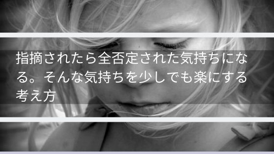
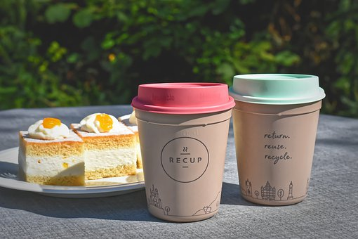

指摘されたら全否定された気持ちになる・・そんな気持ちを少しでも楽にする考え方
拒絶された感情に対する付き合い方はあるのか？
指摘や注意を受けると全否定された気持ちになって物凄く落ち込んでしまう。そんな経験ありませんか？
指摘されたことが頭の中でぐるぐるしてさらに落ち込んでしまう、悪循環。
上司、同僚、親、友達、他人、誰からも悪く思われたくないと強く感じる人にとって、指摘や注意というのは「全否定（拒絶）された」「嫌われた」と負の感情が強くのしかかってきます。
そういう人は相手がどんな気持ちか、相手が何を求めているかを常に考えている人なので相手の期待通りになっていないことにストレスを感じます。
そして後から、こうすればよかったとか、これは言わないほうがよかったとかを考えてしまいます。
そういった思いやりがあり自己が否定されることに不安を抱えている方の気持ちがすこしでも楽になれば幸いです。
褒められた時のことを思い出す
思い出してください。その指摘や注意をしてきた人に褒められた時のことを。
その褒められていた時には、必要とされて嬉しかったという気持ちがあったはずです。
嫌われてしまったのではないかと重く受け止めていた気持ちと相殺してしまうのです。
自分なんてダメ人間だなんて思う必要はないです。褒められていた時は輝いている人間だったじゃないですか。
完璧な人間なんて存在しないです。相手の求めている通りにならなくて指摘されたのであればそれだけ期待されていたともいえます。
もし、期待を裏切ってしまったと考えてしまうのであれば、次期待を裏切らないようにすればいいのです。
自分で自分を認めて肯定する
他の人に認められないことが不安ならせめて自分で自分を認めてあげてください。
あなたがあなたの味方になってあげてください。救ってあげてください。
あなたは思いやりのある人です。相手の気持ちを考えられる人です。
たまに思いやりがあるのではなく、自分が嫌われるのが怖くて顔色をうかがっているだけの自分勝手なやつだと酷い物言いをする人がいます。
自己肯定感の低いあなたは、そうなのかもと思ってしまいがちです。
全くそれは違います。相手の期待や気持ちも考えられず好き勝手やってるほうが自分勝手です。
あなたは思いやりがあり、相手のためを思って行動しているのだから自身を持ってください。
そしてそのことを自分自身で認めて、自分を褒めてください。
あなたを必要としてくれる一番の人はあなたです。
落ち込んだ気持ちやストレスを発散する
人間は何もしていないと考えが頭の中に浮かび続けてくる生き物です。
指摘や注意された後ってそのことばかりが頭の中に浮かんできます。
対策を考えるのも大事ですが、ストレスや不安で押しつぶされないほうがもっと大事です。
普段楽しいことが楽しくなくなってしまい、楽しむ気力がなくなっているかもしれないです。
おすすめなのは美味しいものを食べたり飲んだりすることです。
普段よりおいしく感じないかもしれないですが、脳は食べることにエネルギーを使うため考えることを中断します。
お腹が膨れれば満足感が脳から送られてきてストレスを和らげてくれます。
甘いものを食べれば効果はさらに高いですが、太るので食べすぎは注意ですね。
他にも好きな映画や動画を見るのもよいです。最初は楽しめないかもしれないですが、見ているうちに気持ちがかわってくるのはよくあることです。
気持ちは楽になりましたか？
この記事で少しでも気持ちが楽になったなら幸いです。
自分自身を肯定して褒めてください。
思いやりのある優しいあなたを。
合わせて読みたい。